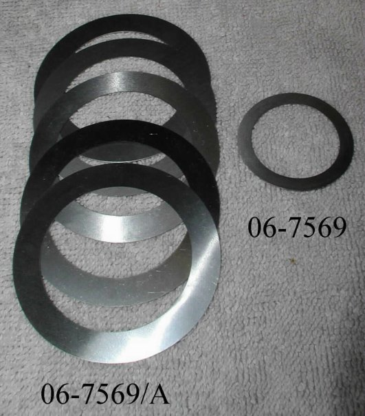
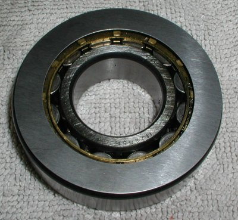
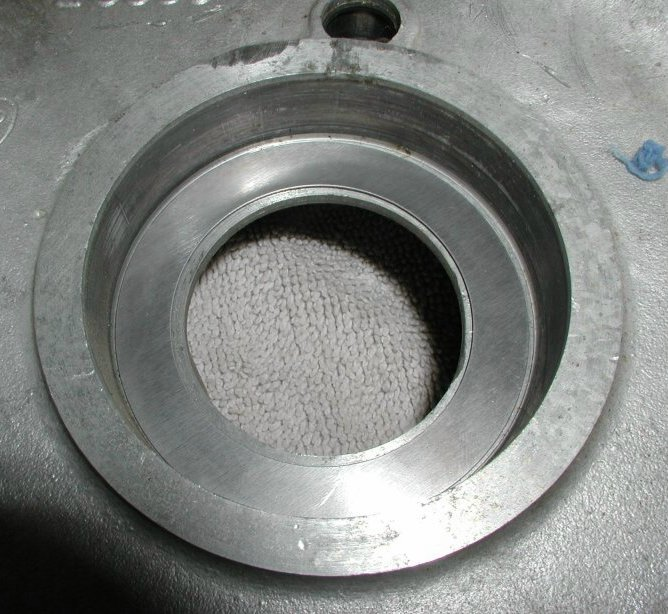
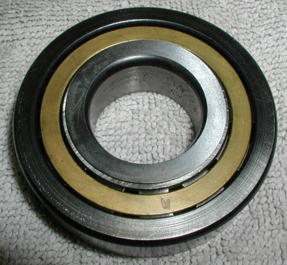

Prices are current as of 02/12/21.
Summary:
This article shows the two types of crank shaft shims available.
When placing two super blend roller bearings (06-4118) on the crank, you must fix the end play of the crank
since the inner races are not held in place as in a ball bearing.
The end play should be around .005" to .010".
The end play will increase when the engine heats up, but .005" to .010" is a good end play to shoot for.
Shim Comparisons:

The factory part manuals show the shim, 06-7569 or NMT2196A, being placed between the outer race of the bearing and the crank case. However the factory shim, 06-7569, supplied by Andover Norton goes between the inner race of the bearing and the crank cheek. The factory shim is only available in .003".
We find it a lot easier and less destructive to the bearing to remove the bearing from the timing case than remove the inner race from the crank. Therefore, Old Britts has had some shim kits made up, 06-7569/A, and these shims go between the outer race and the crank case. Each kit comes with five shims and the sizes are: .002", .005", .008", .010" and .015", which should be sufficient for any engine rebuild.



Pricing:
This page was written and designed by F. H. Eaton
& Associates if you have any questions or comments please
contact us at infon@fheaton.com